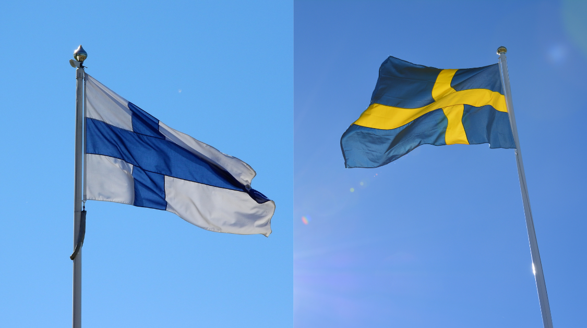

World
Finland and Sweden: The Route to NATO
By Enya Fang | Published May 16, 2022 4:41 p.m. PST

The decision on May 15th came as a monumental one for 2 historically neutral countries, and even more so, for the wider global population. Sweden’s ruling party followed shortly after the Finnish government officially declared its intentions to join NATO in a twin development for the military alliance.
Nearly 3 months since the start of the Russian-Ukraine war, both Nordic countries seemed to have arrived at similar conclusions; stunning reversals of their long-standing policies of non-military alignment.
“This is a historic day. A new era is opening,” Finnish President Sauli Niinistö said at a joint press conference with Prime Minister Sanna Marin. The Finnish parliament is expected to submit a formal membership application to NATO headquarters in Brussels, likely sometime next week.
Mere hours later, Sweden’s governing Social Democratic Party also announced it was in favor of joining the trans-Atlantic alliance amid soaring political and social support back home.
“The best thing for the security of Sweden and the Swedish people is to join NATO,” Swedish Prime Minister Magdalena Andersson told a news conference.
To put the historical significance of NATO membership by both countries simply: Finland and Sweden broke their neutrality after the end of the Cold War by joining the European Union and later partnering with NATO in the 1990s, solidifying attachments to the West. But NATO, short for the North Atlantic Treaty Organization, is a military coalition with a well-known stance: that an attack on one of its members is an attack on all. But as non-members, if either Finland or Sweden had been faced with Russian onslaught, neither America nor Britain would have the commitment to strain their nuclear weapons across the 2 countries in intervention as NATO code commends they do for the rest of the alliance.
Particularly with the current Russian onslaught in Ukraine, neither felt this was sufficient protection. Yet making the decision to join NATO now does not reduce the tension it will subsidize in their relations with the Kremlin; NATO expansion in Europe completely counters Russia’s stronghold in Europe and abroad, which many will argue was the motive behind its invasion of Ukraine.
Despite grumbling from the Turkish prime minister, the admission of both countries should be a formality - given that they have the approval of all 30 current NATO members. Both will bring formidable armed capabilities with them if granted admission; Arctic warfare, and specifically in Finland’s case, the largest artillery force in all of Europe.
Military capacity is only one key benefit among many that Finland and Sweden will collectively bring. Membership will more than double NATO’s border with Russia through Finland and likely strengthen its northern regions near the Baltic states, which will make it easier for military efforts that both joiners will be pledged to defend.
The Russian response to this should also not go easily overlooked; the Kremlin has responded by cutting electricity supplies across the border and threatening “military-technical” action, though what that implies is frankly unclear. The sole conclusion that seems clear enough from the leadership of both Finland and Sweden, however, is that the dangers of threatening Russia are unequivocally overweighed by the greater dangers of lacking protection from thereof. Now, as the war in Ukraine continues in turmoil, the world watches and awaits its own reformation.